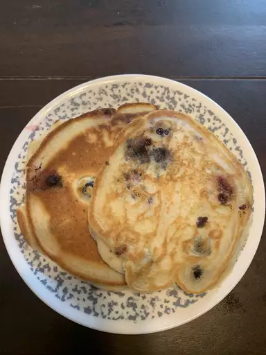

Pancakes

Description:
Pancakes are a classic American breakfast food with all the charecteristics of a good breakfast:
Flavor, deliciousness and goodness.
This is a recipe for normal pancakes, not especially fluffy, dense, flat or thick.
If you've never made pancakes at home, this is the recipe for you. If you have but you're
dissatisfied with your current pancakes, you might as well try this one.
Ingredients:
-
1 1/2 Cups All purpose flour
-
3 1/2 Baking powder
-
1 Tablespoon Sugar
-
Pinch of Salt
-
1 1/4 Cups Milk
-
3 Tablespoons Melted Butter
-
1 Egg
Instructions:
-
Sift the flour, mix all dried ingredients in a large bowl.
Form a well in the center and add the milk, butter and egg to it.
Mix together until smooth.
-
Heat a lightly oiled pan or griddle to medium-high. Scoop the batter
onto the griddle, using around 1/4 cup of batter per pancake. Flip when
bubbles have formed and the edges are dry.
-
Enjoy!